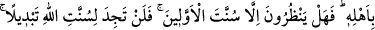
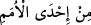

gerçekten habersizdik» demeyesiniz diye; Yahut «Bize de kitap indirilseydi, biz
onlardan daha çok doğru yolda olurduk» demeyesiniz diye (Kur’an’ı indirdik). İşte
size de Rabbinizden açık bir delil, hidayet ve rahmet geldi. Kim, Allah’ın âyetlerini
yalanlayıp onlardan yüz çevirenden daha zâlimdir! Âyetlerimizden yüz çevirenleri,
yüz çevirmelerinden ötürü azabın en kötüsüyle cezalandıracağız” (el-En’âm 6/156,
157) buyurması, umumi mânâya engel değildir. Çünkü burada özellikle iki tâifenin ve
kitaplarının konu edilmesi, kendilerinin diğer ümmetler arasında, kitaplarının da diğer
semâvî kitaplar arasında meşhur olmasından dolayıdır.
Bâzıları der ki “ümmetlerin birinden” anlamına gelen “ ifâdesi, hidâyet
ve istikamette başkalarına üstün kılınan ümmetlerin birinden demektir. Arapların bir
belâ ve musibete “o belâ ve musibetlerin biridir” demeleri de bu kabildendir. Yâni “o,
büyük bir belâ ve musibettir,” demektir. Yine “o musibet yediden biridir” denilir ki Âd
kavmine yedi gece peşpeşe gönderilen şiddetli fırtına ve musibet gecelerinden biridir,
demek olur.
Âyette şuna da işâret edilmektedir ki insan, ruh ve bedenden mürekkep bir varlıktır.
İnsan rûhâniyetiyle dine ve din ile ilgili şeylere; beşeriyetiyle de dünyaya ve dünyayla
ilgili şeylere meyleder. Mümin ve kâfir bu konuda eşittir. Ancak kâfir, rûhâniyetinin
beşeriyetine galib olması durumunda dini bir şeye meyledip bu konuda muâhede yapar
ve sonra da bu sözünü yerine getirmek isterse, kâfirin nefsi buna muvafakat etmez.
Çünkü onun nefsi dinden yüz çevirmekte ve küfre meyletmektedir. İçinde bulunduğu
küfrün karanlığı, onu verdiği bu sözü bozmaya teşvik eder ve kâfir sözünü tutmaz.
Mümin ise beşeriyetinin rûhâniyetine galebe çalmasıyla dünyaya meyledip bunu
yerine getirmek üzere kendi nefsiyle ahidleşse îman nûru onu bundan men eder. Onu bu
ahdi bozmaya teşvik eder ve mümin o ahdi bozar. İşte sâdık mürid de böyledir.
“Kabz” hali şiddetli olup feyz kesilince nefis, artık riyâzat ve mücâhedelerin
sıkıntılarına katlanmaktan yorulur, bıkıp usanır. Bu durumda mürid nefsine bir takım
ruhsat, kaçamak ve bahaneler arar. Bu konuda nefsiyle muâhede yapar. Şeytan da bu
konuda onun ahid ve yeminini te’kid ve te’yid edip ona vaatlerde bulunur. Artık mürid
nefsiyle yapmış olduğu bu sözleşmeyi uygulamaya koyacağı zaman şayet iradesi sâdık
olursa azimeti öne geçer. Taleb silsilesini tahrik eder ve nefsiyle yapmış olduğu ahdi
bozar. Allah ile olan taleb ahdini yeniler. Zikir anahtarıyla kalbinin kapısını o yüce
hazrete (Allah’a) açıncaya kadar zikre sarılıp yapışır. Hakk’ın gelmesiyle de o temenni
ettiği bâtıl kaybolup gider.